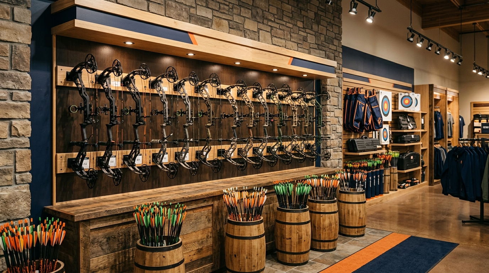

Angola · 101-lakes country
The last stop before the lake.
Fresh live bait, a wall of tackle, and a full archery pro shop — family owned on State Road 127 since 2006, right on the road between Angola and Lake James.
Fresh live bait, a wall of tackle, and a full archery pro shop — family owned on State Road 127 since 2006, right on the road between Angola and Lake James.
Fresh bait Friday
Minnows, crawlers, leeches, waxworms and more — fresh, lively, and dipped generously. Reviewers put it best: "They always make sure bait is fresh & give generous dips of minnows."


The pro shop
A certified bow technician, the 2026 Hoyt and Bear lineups in stock, TenPoint and Wicked Ridge crossbows, and a 20-yard indoor range — by appointment, "to make sure you leave here shooting and feeling confident."
Word on the water
Quotes kept exactly as written.
"Gail, Derek & Justin do a great job with this bait store. They always make sure bait is fresh & give generous dips of minnows."
"Justin is very knowledgeable, always friendly service. Highly recommend! I will only go to Big D's to get work done on my bow now."
"They have all the supplies you need to fish. Worms, bee-moths, leeches, minnows, shiners, suckers, and plenty of hooks, weights, and all kinds of tackle. Great shop!"
Come December
When the lakes lock up, Big D's stocks a huge ice-fishing selection — and Crooked Lake's hard-water bite is one of Steuben County's worst-kept secrets.
The lakes guide